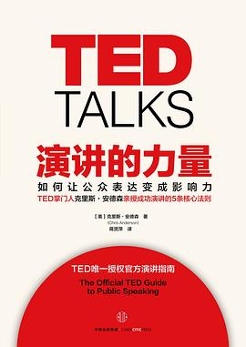

演讲的力量
[美]克里斯·安德森（Chris Anderson） 著|蒋贤萍 译
推荐序 终于等来一本真的演讲书
序言 点燃思想
第一部分 演讲基础
第一章 展示技艺：培养必要的技巧
第二章 思想植入：伟大演讲的馈赠
第三章 常见陷阱：应该避免的四种演讲风格
第四章 主线：你的观点是什么？
第二部分 演讲工具
第五章 联系：与观众建立起信任的纽带
第六章 叙述：故事的强大魅力
第七章 解释：如何解释艰涩的概念？
第八章 说服：用推理一步步征服观众
第九章 展示：请给我惊喜
第三部分 准备过程
第十章 视觉资料：有害的幻灯片
第十一章 演讲稿：背诵还是不背？
第十二章 串词：等等，我需要排练吗？
第十三章 开场与结尾：你想给观众留下什么样的印象？
第四部分 舞台呈现
第十四章 衣橱：我该穿什么？
第十五章 心理准备：如何控制紧张？
第十六章 装备：演讲台、提词器、卡片或者什么都没有？
第十七章 声音和仪态：赋予文字以生命
第十八章 版式革新：全谱演讲的前景（和危险）
第五部分 反思
第十九章 演讲的复兴：知识的相关性
第二十章 为什么重要：人与人的互联性
第二十一章 你的时机已到：哲学家的秘密
推荐序 终于等来一本真的演讲书
序言 点燃思想
第一章 展示技艺：培养必要的技巧
第二章 思想植入：伟大演讲的馈赠
第三章 常见陷阱：应该避免的四种演讲风格
第四章 主线：你的观点是什么？
第五章 联系：与观众建立起信任的纽带
第六章 叙述：故事的强大魅力
第七章 解释：如何解释艰涩的概念？
第八章 说服：用推理一步步征服观众
第九章 展示：请给我惊喜
第十章 视觉资料：有害的幻灯片
第十一章 演讲稿：背诵还是不背？
第十二章 串词：等等，我需要排练吗？
第十三章 开场与结尾：你想给观众留下什么样的印象？
第十四章 衣橱：我该穿什么？
第十五章 心理准备：如何控制紧张？
第十六章 装备：演讲台、提词器、卡片或者什么都没有？
第十七章 声音和仪态：赋予文字以生命
第十八章 版式革新：全谱演讲的前景（和危险）
第十九章 演讲的复兴：知识的相关性
第二十章 为什么重要：人与人的互联性
第二十一章 你的时机已到：哲学家的秘密